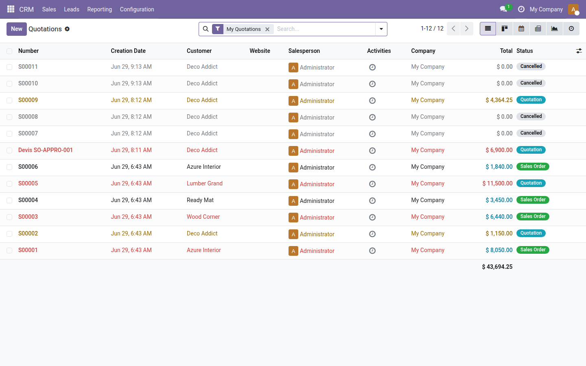
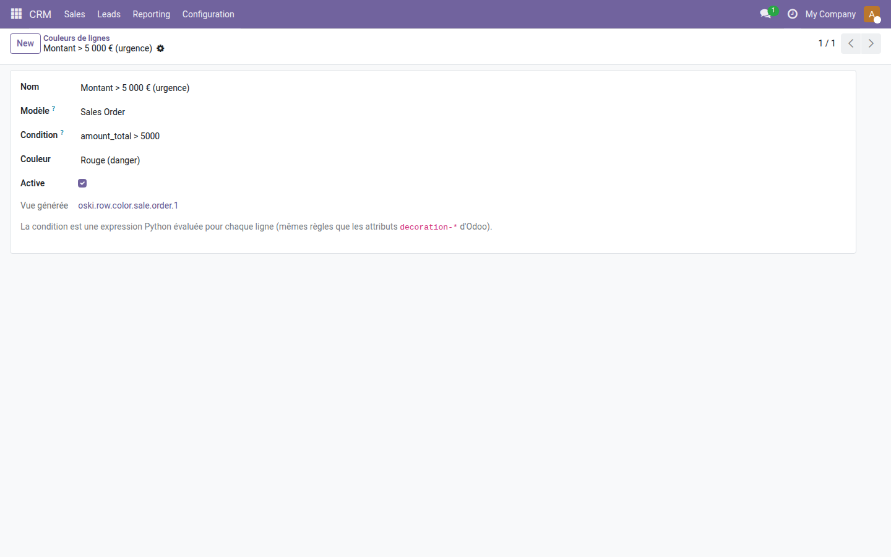
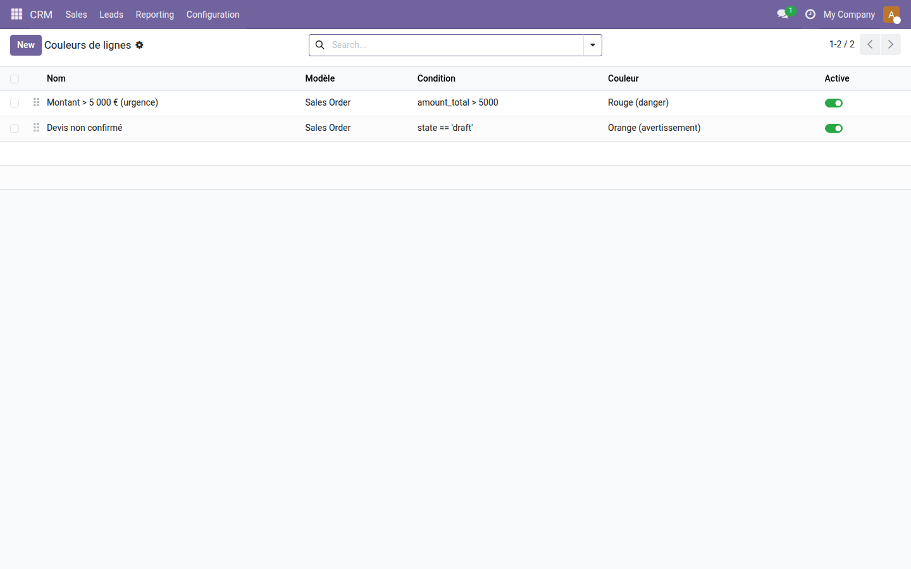

Highlight your urgent orders, overdue invoices or critical products — without touching a single line of code.
In Odoo, coloring a list row requires editing XML and knowing the syntax of the decoration-* attributes — a job for developers. The result: operational teams see uniform lists and have to open each record to tell urgent cases from normal ones. Sorting is not enough: you need to read the status instantly from the color.
state == 'done', amount_total > 1000) and pick the color: blue, green, orange, red or gray.In red, orders above €5,000 (Wood Corner, Lumber Grand, Azure Interior); in orange, quotations still in the Quotation state (S00002, S00009) — instant visual spotting with no extra filter.

Three fields are enough: the target model (Sales Order), the triggering Python expression (amount_total > 5000) and the color — the inherited view is created automatically and shown read-only.

5000, color Red (danger), generated view oski.row.color.sale.order.1" style="max-width:100%;border-radius:8px;border:1px solid #e5e7eb;box-shadow:0 4px 14px rgba(0,0,0,.07);margin:10px 0;"/>The interface lists all rules with their model, condition and color — each rule can be enabled or disabled in one click without deleting it.

5000 and Orange warning for state == 'draft', both active on Sales Order" style="max-width:100%;border-radius:8px;border:1px solid #e5e7eb;box-shadow:0 4px 14px rgba(0,0,0,.07);margin:10px 0;"/>decoration-* mechanism, guaranteed compatible with every list view of the platform.License LGPL-3 — compatible with Odoo 19.0. Support: apps@odooskills.com.